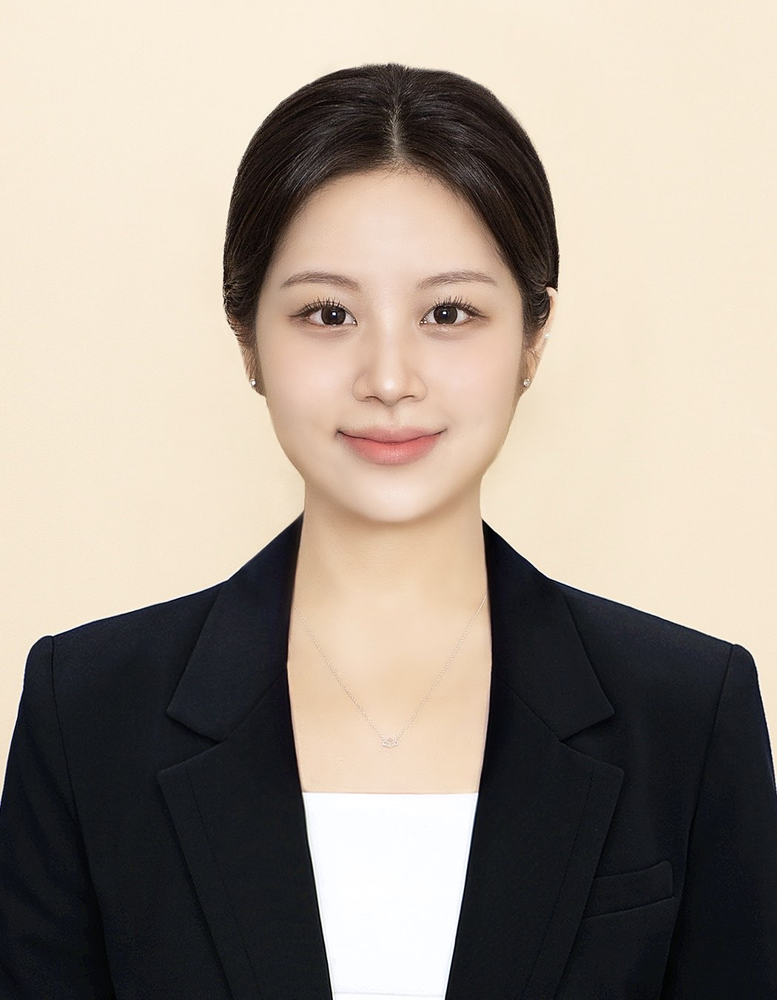

Jeongyoon Lee

Ausbildung
Deutschland
- 2021 - 2025: Bachelor of Science: Informatik plus Statistik, Ludwig-Maximilians-Universität München
- 2018 - 2021: Gymnasium Sarstedt
- 2016 - 2018: CJD Elze Gymnasium
- 2015 - 2016: Humboldt Institut - Lindenberg, Bad Schussenried
Südkorea
- 2007 - 2015: Grundschule, Mittelschule - Südkorea
Kompetenzen
- Strukturierte Arbeitsweise
- Begeisterungsfähigkeit
- Engagement und proaktives Handeln
- Selbstreflexionsfähigkeit
- Lernbereitschaft
- Motivation und Ausdauer
- Zuverlässigkeit
Sprachen
- Koreanisch - Muttersprache
- Deutsch - Experte (C2)
- Englisch - Gute Kenntnisse (B2)
Hobbys
- Computerspiele
- Programmieren
My Projects
Contact me